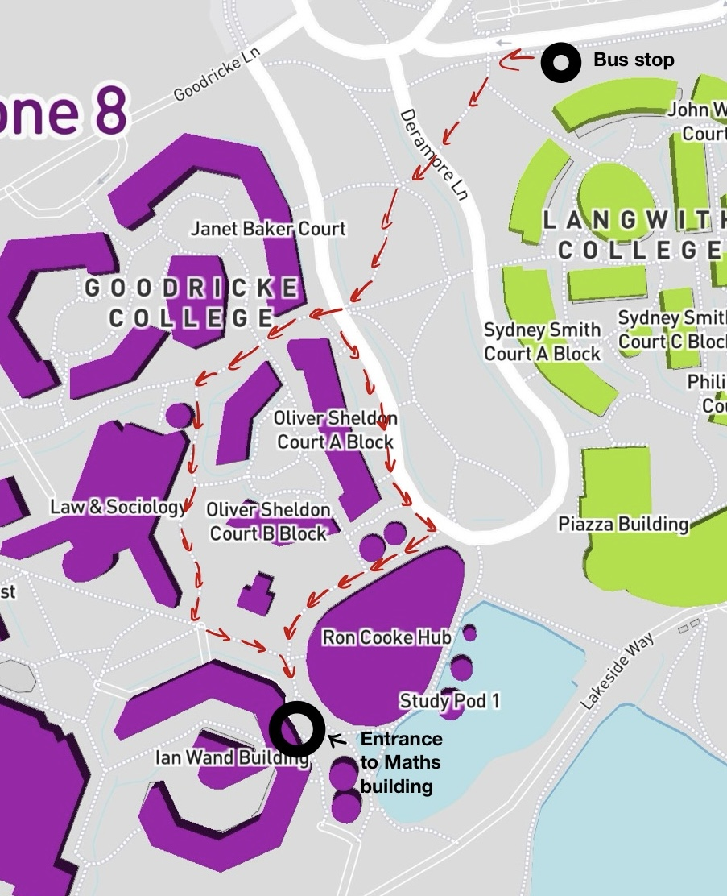
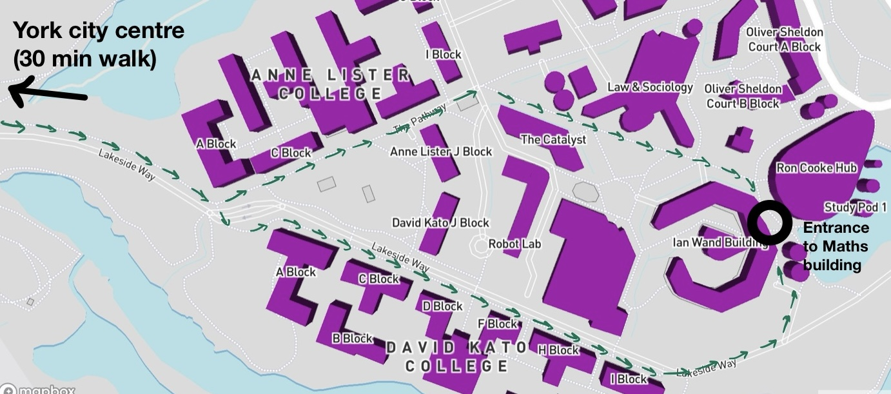

Back to homepage
Directions to University of York Maths Department

The maths department is in the Ian Wand building on the east campus. The main meeting point is the "Topos" on the second floor (turn left at the top of the stairs).
You can also search for the location on the University campus map (this includes a link to an interactive campus map).
Bus.
Exit the station and catch bus U1 or U2. These buses come approximately every 10 minutes, take around 25 minutes to reach the campus east bus stop, and cost approximately £3 for a one-way ticket. You can either use your credit card on the bus, or buy tickets in advance through the First Bus app.
Once the bus reaches campus, the best stop is the "Campus East" stop. Then walk downhill and follow the red arrows on the map.
Walking.
Walking to the maths department through the city centre takes slightly more than 1 hour from the rail station. Once you reach campus then follow the green arrows on the map below to reach the maths department.
Car. Pay and Display parking is marked on the campus map. If you are planning to arrive by car then please contact us to arrange a visitor's permit.

Last updated 10 September, 2025